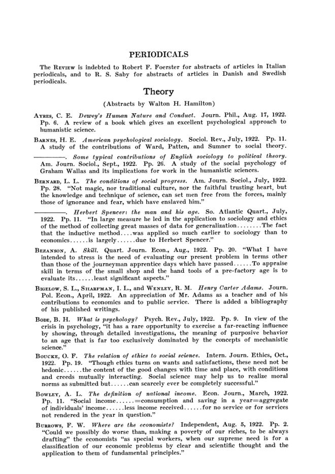

Nourse, as cooperativas, a crise da teoria e a base tarifária
Leitura: 12 min
Nourse examina os três princípios da cooperação; Boucke vê a teoria sem alicerce psicológico; Southworth propõe o investimento como base tarifária; Ise quer o curso de princípios no fim.


E. G. Nourse, do Iowa State College, abre o número de dezembro de 1922 da American Economic Review com uma loja: a pequena loja sem enfeites que vinte e oito tecelões de Rochdale montaram em Toad Lane, no modelo de lojas sem fins lucrativos que o movimento cooperativo britânico transformou em doutrina. Para o autor, os cooperados são fortes na prática e fracos na teoria, e a falta de um entendimento comum dos princípios já cria problemas para legisladores, tribunais, contadores e fiscais do imposto de renda.
A edição, a quarta do volume XII, reúne quatro artigos de natureza diferente. Nourse examina os três fundamentos econômicos da cooperação. O. Fred Boucke, de State College, Pensilvânia, sustenta que o abandono da psicologia sensacionista deixa a teoria econômica numa situação sem precedente. Shirley D. Southworth, da Princeton University, discute como as comissões de serviços públicos fixam a base tarifária e a taxa de retorno das concessionárias. E John Ise, da University of Kansas, propõe levar o curso de princípios de economia para o último ano da graduação. Seguem-se resenhas, listas de livros novos, de artigos de periódicos e de documentos oficiais, e as notas da associação.
O que distingue uma cooperativa de uma empresa comum?
E. G. Nourse (Iowa State College) · “The Economic Philosophy of Co-operation” · pp. 577–597
Nourse parte dos três fundamentos geralmente atribuídos ao êxito de Rochdale. O primeiro é a eficiência, ou o custo menor do serviço: venda sem crédito, sem angariação de clientes e com trabalho gratuito ou pouco pago dos membros. O segundo é a distribuição popular das sobras: juro mínimo ao capital e o excedente devolvido como dividendo de compra e de trabalho. O terceiro é o controle democrático, em que cada membro vota como indivíduo. Juntos, diz o autor, formam um protesto triplo: contra os custos do sistema competitivo de vendas, contra o capital como credor residual dos lucros e contra a identificação do controle com a propriedade de ações.
Na eficiência, o argumento central não é a economia de balcão, mas o ataque aos desperdícios da concorrência: marcas duplicadas, caixeiros-viajantes, publicidade e comerciantes redundantes. O autor chama de “buymanship” a reação do consumidor organizado ao culto da venda. Entre produtores, o exemplo é o fazendeiro que pergunta por que sustentar sete compradores locais de gado quando um agente bastaria, e o das associações de serviços agrícolas, das que reúnem capital para a debulha a vapor às de pulverização e de controle leiteiro.
Na distribuição, Nourse observa que a cooperação não é coerentemente anticapitalista nem pró-trabalho. O dividendo ao trabalho, ainda previsto em lei, é letra morta na prática; a Co-operative Wholesale Society britânica teve greves em suas fábricas; e sociedades de produtores e de consumidores chegaram ao conflito aberto. O autor descreve uma “cooperação militante”, que aplica os princípios dentro do grupo e barganha duramente fora dele.
No controle, a cooperação propõe três contrapesos à sociedade anônima: capital tratado como empréstimo, sem voto; proibição de procurações e voto individual; e quadro de membros aberto a quem participa do negócio. Quanto aos campos de aplicação, Nourse conclui que a copropriedade operária não se firmou diante da técnica industrial, que a cooperação de consumidores levada ao extremo se tornaria socialismo coercitivo, e que a cooperação agrícola, ao aceitar os preços do mercado e preservar a iniciativa do pequeno proprietário, é o ramo mais importante nos Estados Unidos.
A teoria econômica perdeu o seu alicerce?
O. Fred Boucke (State College, Pennsylvania) · “A Unique Situation in Economic Theory” · pp. 598–605
Boucke começa por uma convicção que diz ser difundida entre os economistas: a literatura das duas últimas décadas, sobretudo depois da Grande Guerra, foi crítica, desfez crenças antigas e pouco reconstruiu. Os economistas vinham renegando as premissas psicológicas do século XVIII, o sensacionismo e o associacionismo da psicologia empírica britânica, e com elas as duas escolas que ocuparam um século de pesquisa: o utilitarismo, ou classicismo, e o marginalismo. No lugar da análise cresce a descrição de instituições; os currículos prosperam sob o signo do comércio e das finanças; e economistas promissores trocam o campus por bancos, fábricas e a administração pública.
A primeira parte do artigo é um retrospecto. Os fisiocratas buscaram leis sociais inspirados em Newton; Smith introduziu uma teoria da natureza humana; os ricardianos fizeram da economia uma ciência das trocas, a catalática; e John Stuart Mill, com a Lógica de 1843, deu-lhe um método dedutivo assentado no sensacionismo. A escola histórica de Roscher, Knies e Schmoller foi, para o autor, um interlúdio. O marginalismo concordava no essencial com o utilitarismo, na psicologia hedonista, na dedução e na estática; a diferença estava entre uma teoria objetiva e uma subjetiva do valor.
A segunda parte pergunta o que sobra quando a velha psicologia é abandonada. Boucke distingue leis qualitativas, que dizem quais eventos ocorrem juntos, e quantitativas, que medem também suas grandezas, como a lei de Boyle. O marginalismo, diz, caiu num círculo vicioso: como os estados psíquicos não se medem, a intensidade do desejo tinha de ser julgada pelos preços pagos. Daí as novas tarefas: dinâmica no lugar da estática, visão de longo prazo ao lado da de curto, estudo dos eventos como ocorrem no mundo real, ir além da troca e examinar a indução estatística e a estatística descritiva.
“Uma situação sem paralelo pode levar a realizações sem paralelo.” (“An unparalleled situation may lead to unparalleled achievements.”)
O autor não antecipa o resultado. Pode-se concluir que só cabe uma análise qualitativa meio filosófica, meio científica, ou que medidas diferentes servem a assuntos diferentes. Por algum tempo, escreve, os economistas serão céticos que nada aceitam por fé; mas a teoria, a seu ver, está às vésperas de grandes acontecimentos.
Sobre que base uma concessionária deve ganhar?
Shirley D. Southworth (Princeton University) · “Some Recent Problems in Public Utility Valuation and Regulation” · pp. 606–613
A comissão de serviços públicos que fixa a passagem do bonde ou a tarifa do gás precisa de dois números, lembra Southworth: a base tarifária, isto é, o “valor” da propriedade dedicada ao serviço, e a taxa de retorno permitida sobre o investimento. Os relatórios das comissões mostram que a base é estabelecida com grande cuidado e a taxa, de modo improvisado. O autor resume as regras recentes de tribunais e comissões pelos títulos dos Public Utility Reports Annotated e observa que a maior parte delas é questão de opinião, julgamento ou viés.
A principal é saber que custo mede o valor. As comissões preferem o mais baixo, em geral o custo original; as empresas, o custo de reprodução a preços altos; os tribunais inclinam-se para a reprodução. Na guerra, recusou-se usar os preços correntes e buscaram-se médias de cinco a dez anos anteriores ao conflito, o que, diz o autor, expôs a inflexibilidade do sistema: reavaliações são caras e lentas. O valor de empresa em funcionamento, estimado pelo método de Wisconsin como as perdas iniciais não compensadas, produz um paradoxo: a empresa que nunca prosperou e a que sempre prosperou ficam igualmente sem ele.
Para Southworth, a raiz do problema é a ambiguidade de “valor”, herdada da doutrina clássica do custo: o valor depende de rendimentos futuros estimados, e o raciocínio fica circular. Ele propõe a palavra “investimento”, o que o investidor pôs na propriedade, quantia fixa até que ele a altere. A valorização real, por escassez relativa, como a da terra com o crescimento da população, seria tratada como receita ao fixar a taxa de retorno; a mudança no valor da moeda seria corrigida por um índice oficial de preços no atacado, como o do Bureau of Labor Statistics.
“Um retorno justo sobre o seu investimento é tudo o que alguém pode razoavelmente pedir ao público.” (“A fair return on his investment is all that any man can reasonably ask of the public.”)
O autor pede que a taxa se apoie em provas sobre o custo do dinheiro, inclusive em Nova York, e não na mera “judicial notice” dos tribunais, porque uma pequena diferença na taxa equivale a uma diferença considerável na base.
O curso de introdução deve vir no início ou no fim?
John Ise (University of Kansas) · “The Course In Elementary Economics” · pp. 614–623
Depois de anos ensinando princípios de economia a calouros, veteranos e pós-graduandos, e a alunos de comércio, agricultura, direito, engenharia e veterinária, John Ise propõe inverter a ordem habitual: o curso de Elements, em vez de ser o primeiro e pré-requisito dos demais, deveria vir no último ano, precedido pela maior parte dos outros cursos de economia. Talvez fosse melhor, diz, eliminá-lo e oferecer no último ano um curso substancial de Principles.
O argumento tem várias partes. Para quem se especializa, o curso é sobretudo uma visão panorâmica do que será visto em detalhe depois. Um dos manuais mais populares percorre, em 750 páginas, da história econômica da Inglaterra às finanças públicas e à história do pensamento. Os alunos decoram definições de utilidade, valor e renda e logo as esquecem; parte delas precisa ser desaprendida, porque nos cursos posteriores capital, terra e juro têm outro sentido, e em Marketing distribuição se refere a laranjas e batatas. Os problemas de distribuição, os mais complexos da disciplina, exigem a maturidade de quem já estudou o sistema econômico como ele é.
Para Ise, o arranjo vigente se explica pela tradição acadêmica: o curso de princípios ficou como introdução quando os cursos especializados foram acrescentados, e o Elements of Political Economy de Wayland, de 1837, lembra muitos textos recentes. Ao menos vinte instituições já exigiam cursos descritivos antes de Principles, movimento que o autor considera correto, mas insuficiente. Ele examina os argumentos contrários, como alcançar mais alunos e treinar instrutores jovens, e os julga pouco importantes para justificar o esquema.
“Os estudantes devem dominar a fisiologia econômica antes de tentar a terapêutica econômica.” (“Students should have a thorough grasp of economic physiology before they attempt economic therapy.”)
A sequência proposta começa por geografia industrial e comercial, contabilidade, organização de empresas e marketing; passa a moeda e bancos, ferrovias e comércio exterior; e termina com princípios no último ano. Ise cita dois casos: Stanford exigia 80 unidades de crédito antes de seu curso de princípios, e a University of Kansas, um curso de Advanced Principles no último ano dos alunos que se especializam.
O que mais há na edição?
As resenhas cobrem manuais e monografias. Everett W. Goodhue, do Dartmouth College, trata de Principles of the New Economics, de Lionel D. Edie, e de Introduction to Economic Problems, de James Dysart Magee; Edgar J. Rich, de Railroads and Government, de Frank Haigh Dixon; J. Hugh Jackson, de um livro de Eugene Szepesi sobre custos em tecelagens; Frank A. Fetter, de Economics of Bridge Work, de J. A. L. Waddell; Jens P. Jensen, de Employers' Associations in the United States, de Clarence E. Bonnett; Frank T. Stockton, de Industrial Unionism in America, de Marion Dutton Savage; William A. Scott, de The Guaranty of Bank Deposits, de Thomas Bruce Robb; Ralph H. Blanchard, de um tratado de seguros de Alfred Manes; Herbert Feis, de Government and Industry, de C. Delisle Burns; J. E. LeRossignol, de Socialisation in Theory and Practice, de Heinrich Ströbel; e A. J. Hettinger Jr., de Wealth and Income of the American People, de Walter Renton Ingalls. As notas anunciam a reunião anual da associação em Chicago, de 27 a 30 de dezembro, no Congress Hotel.
Na minha leitura
Na minha leitura, a edição junta três maneiras de fazer economia. Nourse faz análise institucional: compara formas de organização pelo modo como repartem custos, sobras e controle, e testa cada uma pelo resultado prático. Boucke faz crítica de método e pede regularidades objetivas e medidas no lugar de estados psíquicos que não se observam. Southworth mostra o problema de medida na prática, quando um regulador precisa de um número para o capital e outro para o retorno.
O ponto comum é a dificuldade de dar conteúdo a “valor”. Para o regulador, o valor da propriedade depende dos rendimentos que a própria tarifa vai permitir; para o crítico do marginalismo, a intensidade do desejo só se mede pelo preço que se quer explicar. Os dois textos chegam ao mesmo círculo por caminhos diferentes, e ambos procuram sair dele trocando o conceito por uma grandeza registrável: o investimento, num caso, a regularidade estatística, no outro.
Glossário
- Dividendo de compra (patronage dividend)
- devolução da sobra de uma cooperativa aos membros na proporção de suas compras ou vendas.
- Credor residual
- quem fica com o que sobra da receita depois de pagas as parcelas contratuais.
- Base tarifária (rate base)
- valor do capital sobre o qual o regulador permite que a concessionária obtenha retorno.
- Custo de reprodução
- quanto custaria construir hoje a mesma instalação, aos preços correntes.
- Valor de empresa em funcionamento (going value)
- valor atribuído a um negócio já estabelecido, além de seus bens físicos.
- Sensacionismo
- doutrina psicológica que deriva todo o conteúdo da mente das sensações.
- Catalática
- economia entendida como ciência das trocas e dos preços.
Artigos (4)
- The Economic Philosophy of Co-operation — E. G. Nourse (Iowa State College) (pp. 577–597) · resenha acima · comentário completo · JSTOR
- A Unique Situation in Economic Theory — O. Fred Boucke (State College, Pennsylvania) (pp. 598–605) · resenha acima · comentário completo · JSTOR
- Some Recent Problems in Public Utility Valuation and Regulation — Shirley D. Southworth (Princeton University) (pp. 606–613) · resenha acima · JSTOR
- The Course In Elementary Economics — John Ise (University of Kansas) (pp. 614–623) · resenha acima · JSTOR
Resenhas (12)
- Lionel D. Edie, Principles of the New Economics — Everett W. Goodhue (Dartmouth College) (pp. 624–625). Manual que procura relacionar o pensamento econômico recente aos princípios da escola anterior. JSTOR
- James Dysart Magee, Introduction to Economic Problems — Everett W. Goodhue (Dartmouth College) (pp. 625–626). Introdução descritiva a problemas econômicos. JSTOR
- Frank Haigh Dixon, Railroads and Government: Their Relations in the United States, 1910-1921 — Edgar J. Rich (pp. 635–637). As relações entre ferrovias e governo nos Estados Unidos de 1910 a 1921. JSTOR
- Eugene Szepesi, Cost Control and Accounting for Textile Mills — J. Hugh Jackson (pp. 642–643). Controle e contabilidade de custos em tecelagens. JSTOR
- J. A. L. Waddell, Economics of Bridge Work: a Sequel to “Bridge Engineering” — Frank A. Fetter (pp. 643–645). Os fatores econômicos na construção de pontes, vistos por um engenheiro. JSTOR
- Clarence E. Bonnett, Employers' Associations in the United States — Jens P. Jensen (University of Kansas) (pp. 652–653). Livro dedicado exclusivamente às associações patronais americanas. JSTOR
- Marion Dutton Savage, Industrial Unionism in America — Frank T. Stockton (University of South Dakota) (pp. 654–655). Os sindicatos industriais em funcionamento e a direção provável do movimento operário. JSTOR
- Thomas Bruce Robb, The Guaranty of Bank Deposits — William A. Scott (pp. 659–661). As leis estaduais de garantia de depósitos bancários e seus efeitos. JSTOR
- Alfred Manes, Besondere Versicherungslehre — Ralph H. Blanchard (Columbia University) (pp. 672–673). Terceira edição de um tratado alemão sobre o negócio de seguros. JSTOR
- C. Delisle Burns, Government and Industry — Herbert Feis (University of Kansas) (pp. 674–676). Tentativa de encontrar ideias ordenadoras nas mudanças recentes da relação entre governo e indústria. JSTOR
- Heinrich Ströbel, Socialisation in Theory and Practice — J. E. LeRossignol (pp. 676–677). A socialização da indústria vista por um ex-ministro das Finanças do governo revolucionário prussiano de 1918. JSTOR
- Walter Renton Ingalls, Wealth and Income of the American People — A. J. Hettinger, Jr. (Harvard University) (pp. 679–681). Estimativas da riqueza e da renda dos Estados Unidos. JSTOR
Novos livros (16)
- New Books (pp. 626–630). Lista de livros novos: obras gerais, teoria e sua história; história econômica e geografia. JSTOR
- New Books (pp. 630–634). Lista de livros novos: história econômica e geografia; agricultura, mineração, florestas e pesca. JSTOR
- New Books (pp. 634–635). Lista de livros novos: agricultura, mineração, florestas e pesca. JSTOR
- New Books (pp. 638–640). Lista de livros novos: transportes e comunicações. JSTOR
- New Books (pp. 641–642). Lista de livros novos: comércio e crises comerciais. JSTOR
- New Books (pp. 645–652). Lista de livros novos: contabilidade, métodos de negócios, investimentos e bolsas. JSTOR
- New Books (pp. 653–654). Lista de livros novos: capital e organização capitalista. JSTOR
- New Books (pp. 655–659). Lista de livros novos: trabalho e organizações trabalhistas. JSTOR
- New Books (pp. 661–664). Lista de livros novos: moeda, preços, crédito e bancos. JSTOR
- New Books (pp. 664–666). Lista de livros novos: finanças públicas, tributação e tarifa. JSTOR
- New Books (pp. 666). Lista de livros novos: população e migração. JSTOR
- New Books (pp. 666–672). Lista de livros novos: problemas sociais e reformas. JSTOR
- New Books (pp. 673–674). Lista de livros novos: seguros e pensões. JSTOR
- New Books (pp. 674). Lista de livros novos: pauperismo, caridade e assistência. JSTOR
- New Books (pp. 678–679). Lista de livros novos: socialismo e empresas cooperativas. JSTOR
- New Books (pp. 681–682). Lista de livros novos: estatística e seus métodos. JSTOR
Documentos, periódicos e notas (3)
- Periodicals (pp. 683–719). Lista de artigos de periódicos, por assunto. JSTOR
- Documents, Reports and Legislation (pp. 720–738). Documentos oficiais recebidos, a começar pelos da United States Tariff Commission. JSTOR
- Notes (pp. 739–752). Programa da reunião anual em Chicago, de 27 a 30 de dezembro, novos membros e notícias. JSTOR
Fontes
- The Economic Philosophy of Co-operation (pp. 577–597). JSTOR · Internet Archive (PDF)
- A Unique Situation in Economic Theory (pp. 598–605). JSTOR · Internet Archive (PDF)
- Some Recent Problems in Public Utility Valuation and Regulation (pp. 606–613). JSTOR · Internet Archive (PDF)
- The Course In Elementary Economics (pp. 614–623). JSTOR · Internet Archive (PDF)
- [untitled] The American Economic Review, (1922-12-01), pages 624-625 (pp. 624–625). JSTOR · Internet Archive (PDF)
- [untitled] The American Economic Review, (1922-12-01), pages 625-626 (pp. 625–626). JSTOR · Internet Archive (PDF)
- New Books (pp. 626–630). JSTOR · Internet Archive (PDF)
- New Books (pp. 630–634). JSTOR · Internet Archive (PDF)
- New Books (pp. 634–635). JSTOR · Internet Archive (PDF)
- [untitled] The American Economic Review, (1922-12-01), pages 635-637 (pp. 635–637). JSTOR · Internet Archive (PDF)
- New Books (pp. 638–640). JSTOR · Internet Archive (PDF)
- New Books (pp. 641–642). JSTOR · Internet Archive (PDF)
- [untitled] The American Economic Review, (1922-12-01), pages 642-643 (pp. 642–643). JSTOR · Internet Archive (PDF)
- [untitled] The American Economic Review, (1922-12-01), pages 643-645 (pp. 643–645). JSTOR · Internet Archive (PDF)
- New Books (pp. 645–652). JSTOR · Internet Archive (PDF)
- [untitled] The American Economic Review, (1922-12-01), pages 652-653 (pp. 652–653). JSTOR · Internet Archive (PDF)
- New Books (pp. 653–654). JSTOR · Internet Archive (PDF)
- [untitled] The American Economic Review, (1922-12-01), pages 654-655 (pp. 654–655). JSTOR · Internet Archive (PDF)
- New Books (pp. 655–659). JSTOR · Internet Archive (PDF)
- [untitled] The American Economic Review, (1922-12-01), pages 659-661 (pp. 659–661). JSTOR · Internet Archive (PDF)
- New Books (pp. 661–664). JSTOR · Internet Archive (PDF)
- New Books (pp. 664–666). JSTOR · Internet Archive (PDF)
- New Books (pp. 666). JSTOR · Internet Archive (PDF)
- New Books (pp. 666–672). JSTOR · Internet Archive (PDF)
- [untitled] The American Economic Review, (1922-12-01), pages 672-673 (pp. 672–673). JSTOR · Internet Archive (PDF)
- New Books (pp. 673–674). JSTOR · Internet Archive (PDF)
- New Books (pp. 674). JSTOR · Internet Archive (PDF)
- [untitled] The American Economic Review, (1922-12-01), pages 674-676 (pp. 674–676). JSTOR · Internet Archive (PDF)
- [untitled] The American Economic Review, (1922-12-01), pages 676-677 (pp. 676–677). JSTOR · Internet Archive (PDF)
- New Books (pp. 678–679). JSTOR · Internet Archive (PDF)
- [untitled] The American Economic Review, (1922-12-01), pages 679-681 (pp. 679–681). JSTOR · Internet Archive (PDF)
- New Books (pp. 681–682). JSTOR · Internet Archive (PDF)
- Periodicals (pp. 683–719). JSTOR · Internet Archive (PDF)
- Documents, Reports and Legislation (pp. 720–738). JSTOR · Internet Archive (PDF)
- Notes (pp. 739–752). JSTOR · Internet Archive (PDF)
- Sumário da edição no JSTOR: The American Economic Review, vol. 12, nº 4.
Documento em domínio público (EUA, publicado antes de 1931), via JSTOR Early Journal Content e Internet Archive. Resumo e comentário do autor deste site, sem afiliação com a American Economic Association. Encontrou um erro? Escreva: a correção é publicada no próprio texto, com data.
← Nº 178 · Adams, o crédito, a Rússia que compra e o circuito do dinheiro Nº 180 · Seager, os sindicatos de empresa, a tarifa de 1922 e a Europa →